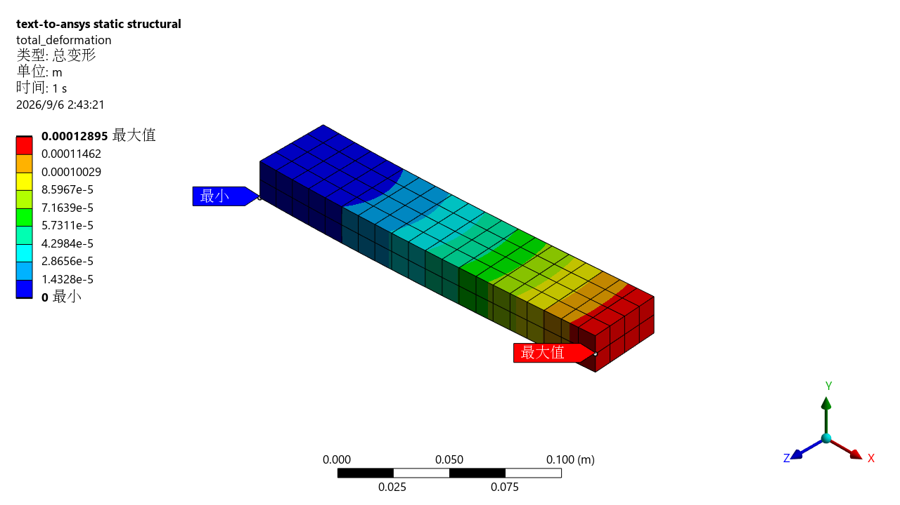

读取明确的规格
几何、材料、载荷、约束和容差写入 simulation.yaml。
下载完整规格 ↓下载 STEP 模型 ↓200 mm 钢梁，一端固定，另一端施加 1000 N 向下力。
从明确的输入，到 Mechanical 求解，再到数值与解析参考的校核。

反力平衡、小变形和悬臂梁解析参考检查通过。
应力奇异性仍需复核；安全系数和自动视觉审查为 NOT_RUN。
页面只展示已保存的真实结果。切换图片不会运行求解器，也不会生成新的仿真数值。
几何、材料、载荷、约束和容差写入 simulation.yaml。
下载完整规格 ↓下载 STEP 模型 ↓生成可审阅的脚本与计划。这一步不需要 ANSYS。
ansys-sim run examples/cantilever/simulation.yaml --out build/demo-dry-run --json本次记录使用 mechanical_batch。真实复现需配置该后端、安装与许可证，并显式添加 --execute。
Windows 复现指南 →安装依赖可能需要联网；已安装后的基础测试与 dry-run 不依赖网络。它展示了一个简单实体上的输入审查、显式求解、独立结果提取和基准校核。完整验收共 9 项用例、5 次真实求解，另涵盖压力、重力与两种模板格式。单一网格和单一 Mechanical 版本的通过，不等于网格收敛、跨版本兼容或强度批准。
Read the English test report ↗